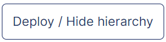
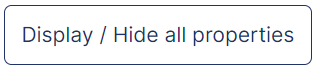
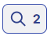

Indicator Management: Introduction
SEARCH TIP Press CTRL + F (Windows and Linux) or CMD + F (Mac) to search within this page.
To access this screen, click: Administration > Indicator management > Indicator management.
Some actions, such as screen access, are permitted only for authorized users, that is, users with the appropriate profile. In other words, if the user does not have the right profile, the user cannot perform the action.
To configure this security (also called user rights), complete the following steps:
-
Define the profiles in the Profile Management screen.
-
Define users and attach one or more profiles to them in the User Management screen.
-
Assign user rights to the desired profiles in the Profile Matrix screen.
The table below contains screen actions that are related to user rights:
| Module | Screen | Action |
|---|---|---|
|
Indicator management |
Indicator management |
Screen access |
|
Create, update, or disable an indicator |
||
|
Recalculate the KPI based on past years* |
*Enables you to update the indicator calculation formula and then to apply this calculation to all past years.
Introduction
For more information on this screen, see the following documentations:
|
STEP BY STEP Before collecting or calculating data, you need to make various settings:
To collect data, go to the Data Collection Campaigns screen. You can also view data calculation on this screen. |
This screen allows you to view and manage indicators.
Data collection and/or calculation is carried out on indicators within campaigns. Each indicator can be deployed on one or multiple entities and periods. Data consolidation is carried out on entities (entity aggregation) and periods (temporal aggregation).
Indicators defined in the CSR Insight application are divided into chapters, themes, and sections, by nesting. Each chapter contains one or multiple themes. Each theme contains one or multiple sections. Each section contains one or multiple indicators.
In other words, from the largest box to the smallest box, we have the following nesting: chapters > themes > sections > indicators.
{kind=link}
General Description of the Screen Content
On this screen, you can view a nested grid with nine columns:
| Column | Description |
|---|---|
|
Hierarchy |
List of indicators included in the chapter and the theme selected from the point of view (POV). NOTE To know more on the Hierarchy column, see the Indicator Management: Hierarchy Column documentation. |
|
Indicator identification |
Identification items of indicators:
NOTE To know more on the Indicator identification column, see the Indicator Management: Indicator Identification Column documentation. |
|
Data typology |
Typology of indicator data:
NOTE To know more on the Data typology column, see the Indicator Management: Data Typology Column documentation. |
|
Thresholds and consistency checks |
Thresholds and consistency checks that need to be respected for one or multiple indicators. A threshold consists of defining a constant value to respect for an indicator: for example, 50, 100, between 0 and 1, and so on. A consistency check consists of defining the value of an indicator in relation to another entered value: for another period/year, for another indicator in the same period/year, and so on. NOTE To know more on the Thresholds and consistency hecks column, see the Indicator Management: Thresholds and Consistency Checks Column documentation. |
|
Dashboards & Extractions |
From this column, you can choose:
NOTE To know more on the Dashboards & Extractions column, see the Indicator Management: Dashboards & Extractions Column documentation. |
|
Indicator uses |
Uses of the indicators in the CSR Insight application related to:
NOTE To know more on the Indicator uses column, see the Indicator Management: Indicator Uses Column documentation. |
|
Carbon footprint |
Carbon footprint information related to indicators:
NOTE For more information on these concepts, see the Carbon Footprint documentation. From this column, you can enable or disable the entry of carbon footprint information for an indicator from the Data Collection Campaigns screen or from this screen. NOTE To know more on the Carbon footprint column, see the Indicator Management: Carbon Footprint Column documentation. |
|
Description |
Indicator descriptions in French and in English. NOTE To know more on the Description column, see the Indicator Management: Description and Admin Comment Columns documentation. |
|
Comment admin |
Comments attached to indicators. NOTE To know more on the Comment admin column, see the Indicator Management: Description and Admin Comment Columns documentation. |
This screen also contains a  button at the top right of the nested grid.
button at the top right of the nested grid.
NOTE To know more on the actions you can do using this button, see the Indicator Management: Three Dots Button documentation.
Moreover, each indicator has an Identity card that appears when creating or editing the indicator.
NOTE To make the Identity card appears, see Create an Indicator within a Section and Edit an Indicator.
Apart from the Comment admin column, the content of the Identity card blocks corresponds to the content of the screen columns.
The Identity uses block only appears in the Identity card when editing an indicator, not when creating one.
{kind=link}
{kind=link}
{kind=link}
{kind=link}
View or Hide the Screen Content
By default, you can view all the indicators, included in the Chapter and Theme selected in the POV, in the Hierarchy column, as well as the content of the Indicator identification, Carbon footprint, and Comment admin columns. Other column content is hidden.
To hide indicators and view only sections in the Hierarchy column, click the

button at the top right of the nested grid.To view again all the indicators in the Hierarchy column, click the button again.
To view the content of one column, except the Hierarchy column, click the  button next to the label of the desired column.
button next to the label of the desired column.
To hide the content of one column, except the Hierarchy column, click the  button next to the label of the desired column.
button next to the label of the desired column.
To view the content of all columns at once, click the

button at the top right of the nested grid.To hide the content of all columns at once, click the button again.
Search for an Indicator
To search for an indicator:
-
Click the
 button at the top left of the nested grid.
button at the top left of the nested grid. -
Type one or more letters or keywords.
As you type, the indicator list in the Hierarchy column changes. If your search corresponds to the label of one or several indicators, the

chips appears next to the label of the section. The number indicates the result number in the section.